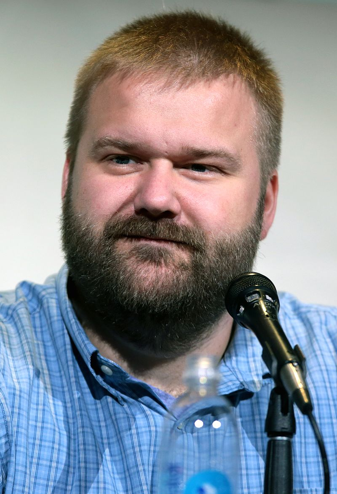
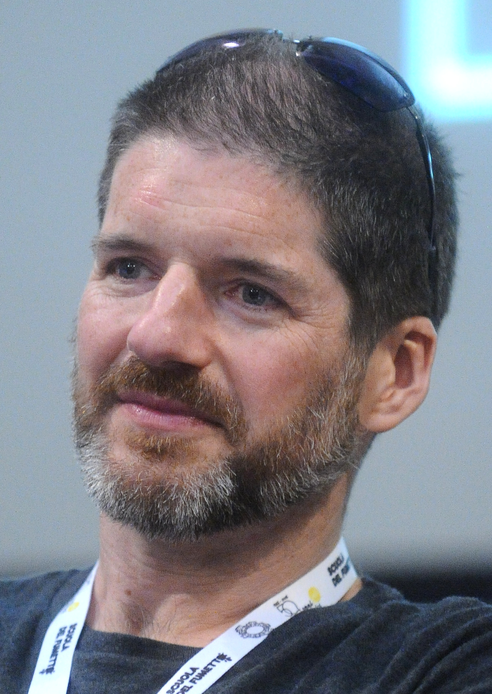

La historia de The Walking Dead nos traslada a un escenario post-pandémico en el que un virus ha acabado con la práctica totalidad de la población mundial convirtiéndolos en zombis. Seremos testigo de la lucha de un grupo de supervivientes por mantenerse a salvo en este entorno infestado de zombis o, como ellos prefieren llamarlos, caminantes.
Nuestro protagonista, Rick Grimes es un policía que despierta de un estado comatoso y encuentra este desolador panorama. Su única razón para seguir adelante es encontrar a su mujer Lori y a su hijo Carl . Ambos, que siguen vivos, están en un grupo de supervivientes en el que también se encuentra el ex compañero de patrulla y mejor amigo de Rick, Shane Walsh con el que Lori, creyendo a su marido muerto, tiene un romance.
La serie, basada en los cómics de Robert Kirkman, cuenta además con varias comunidades de personas supervivientes que han intentado seguir con sus vidas a pesar de estar en peligro constante con los caminantes y otros enemigos peores que los propios infectados.
La serie The Walking Dead se grabó principalmente en locaciones reales en el estado de Georgia, Estados Unidos, que hoy pueden visitarse.
Senoia: el epicentro del universo zombie en Atlanta
El pueblo de Senoia, al sur de Atlanta, fue el centro principal de producción. Allí se recreó la comunidad de Alexandria, con casas construidas exclusivamente para la serie, junto a viviendas reales habitadas por residentes locales.

Las calles tranquilas, casas de madera y el ambiente sureño convirtieron al pueblo en el escenario ideal para reflejar una comunidad cerrada en medio del apocalipsis. Hoy puede recorrerse mediante visitas organizadas como el The Walking Dead Tour, según Explore Georgia.
En Senoia también se encuentra Raleigh Studios Atlanta, un complejo cerrado de 56 hectáreas donde se construyeron los sets de la prisión, partes de Alexandria y otras locaciones clave. El estudio no está abierto al público, aunque permite el acceso en ocasiones especiales o con permisos específicos.

Atlanta: donde empezo todo en The Walking Dead
Atlanta fue clave en la primera temporada, donde Rick Grimes despierta en un hospital y cruza a caballo el Jackson Street Bridge. La ciudad también aportó locaciones como el Georgia State Capitol, Grant Park y zonas urbanas destruidas que reforzaron el tono de la serie. Existen recorridos turísticos por estos lugares.
Peachtree City y Newnan: paisajes y rutas para The Walking Dead
Ciudades cercanas como Peachtree City y Newnan, en Georgia, se usaron para escenas de rutas, caminos rurales y exteriores que acompañaron el avance del grupo protagonista. Estas zonas aportaron un entorno natural que reforzó el clima de aislamiento y supervivencia.
Otros lugares donde grabaron The Walking Dead en Estados Unidos
Además de los sitios ya mencionados, el equipo de producción eligió diversas áreas de Georgia para representar comunidades clave de la historia.
Desde bases reconvertidas hasta centros culturales y zonas costeras, estos espacios aportaron variedad visual y narrativa a distintas temporadas de la serie. Algunos aún conservan señales del paso del elenco, mientras que otros forman parte de circuitos privados o zonas cerradas al público. Estos son:
Fort McPherson (Atlanta)
Antigua base militar utilizada para grabar escenas de la comunidad de El Reino. Actualmente, pertenece a Tyler Perry Studios.
Tybee Island
En la costa de Georgia, se usó para retratar a Oceanside, con playas y paisajes marítimos.

Esco Feed Mill
Un molino privado cerca de Atlanta, donde Daryl se reencuentra con su hermano. Se pueden hacer tours organizados.
Cobb Energy Performing Arts Centre
Representó el Centro para el Control de Enfermedades (CDC) en la primera temporada.
Douglasville y Jekyll Island
Locaciones empleadas en episodios puntuales.
Los lugares de filmación de The Walking Dead comparten ciertas características:
Ambiente rural y suburbano: predominan los pueblos pequeños, caminos de tierra, bosques y casas de madera.
Escenarios urbanos deteriorados: Atlanta y sus alrededores permitieron mostrar ciudades colapsadas.
The Walking Dead es una serie de televisión desarrollada por Frank Darabont, que está basada en el cómic homónimo creado por Robert Kirkman y Tony Moore en el año 2002.
El staff de producción de la serie está compuesto por varios actores, escritores y directores.
Robert Kirkman

Robert Kirkman es un escritor de cómics estadounidense nacido el 30 de noviembre de 1978 en Lexington, Kentucky. Es el creador original de la afamada saga The Walking Dead.
Tras el lanzamiento de la serie de televisión en el 2010, escribió varios de los episodios hasta la quinta temporada. Actualmente es co-productor ejecutivo de esa serie así como también de Fear The Walking Dead.
Kirkman trabaja para Image Comics donde es uno de los cinco socios actuales y el único de los cinco que no fue uno de sus co-fundadores originales. En el 2010 lanzó su imprenta Skybound Entertainment, dependiente también de Image Comics, con la misión de reclutar a nuevos creadores de cómics.
El primer proyecto de Kirkman fue la parodia de superheroes Battle Pope en el año 2000, co-creado con el artista Tony Moore. En el 2003, Kirkman y Cory Walker crearon Invincible para la nueva línea de superheroes de Image Comics. Al poco tiempo, Kirkman y Moore lanzaron The Walking Dead inspirado en las obras de George Romero.
Entre sus obras más reconocidas se encuentran cómics como Invincible, Ultimate X-men, Oblivion Song, Marvel Zombies, entre otros.
Tony Moore

Michael Anthony "Tony" Moore es un artista y dibujante de historietas estadounidense, cuyo trabajo consiste principalmente en piezas de género, sobre todo las de terror y ciencia ficción. De su mano se han ilustrado títulos como The Walking Dead, Fear Agent y The Exterminators.
Moore creció en Kentucky y estudió dibujo, pintura y grabado en la Universidad de Louisville. Él junto con Robert Kirkman fueron los encargados de dar origen al cómic The Walking Dead y Moore estuvo encargado del diseño interior de las páginas hasta la edición número 6, aunque luego continuó contribuyendo e ilustrando las portadas hasta la edición número 24 de la serie.
Moore fue nominado a dos premios Eisner por su trabajo en The Walking Dead: En el 2004 a "Best New Series" y en el 2005 por ''Best Cover Artist''.
Charlie Adlard

Charles "Charlie" Adlard es un artista y dibujante de cómics británico nacido el 4 de agosto de 1966 que es mejor conocido por proveer de arte en The Walking Dead y Savage.
Adlard estudió cine y video en la Escuela de Arte de Maidstone y comenzó su trabajo en el Reino Unido con la serie White Death junto a Robbie Morrison. Ha recibido varios reconocimientos por su trabajo, incluyendo una nominación para el Premio Squiddy al mejor dibujante en 2001.
Entre sus otros trabajos se encuentran además cómics como Mars Attacks!, The Hellfire Club, The X-Files y muchos otros.
Frank Darabont

Frank Darabont es un director, guionista y productor de cine nacido en Europa bajo el nombre de Ferenc Darabont el 28 de enero de 1958. En el año 2010 fue el encargado de realizar la adaptación y producción ejecutiva de la serie televisiva The Walking Dead de la cadena AMC basada en los cómics creados por Robert Kirkman.
Darabont ha dirigido grandes películas como The Shawshank Redemption, The Green Mile, y The Mist, todas basadas en historias de Stephen King y ha sido nominado para tres Academy Awards y un Golden Globe.
Desde el 2010, Darabont fue productor ejecutivo de la primera temporada de The Walking Dead, después de haber escrito y dirigido el episodio piloto. La serie cuenta con un número de asiduos a Darabont, como Jeffrey DeMunn, Laurie Holden y Melissa McBride. En julio de 2011, Darabont se retiró de su cargo como showrunner de la serie. Los informes iniciales sugirieron que él fue incapaz de adaptarse al horario de funcionamiento de una serie de televisión, sin embargo, se confirmó más tarde que fue despedido debido a la reducción del presupuesto del programa y su tensa relación con los ejecutivos de la AMC.
Otros productores:
Gale Anne Hurd
David Alpert
Charles H. Eglee
Glen Mazzara
Cinematógrafos
David Boyd
Rohn Schmidt
Efectos especiales:
Gregory Nicotero
Darrell Pritchett
Sam Nicholson
Jason Sperling
Empresa de producción:
AMC Studios
Circle Of Confusion
Darkwood Productions
Valhalla Motion Pictures
Distribuidoras:
AMC
FOX International Channels